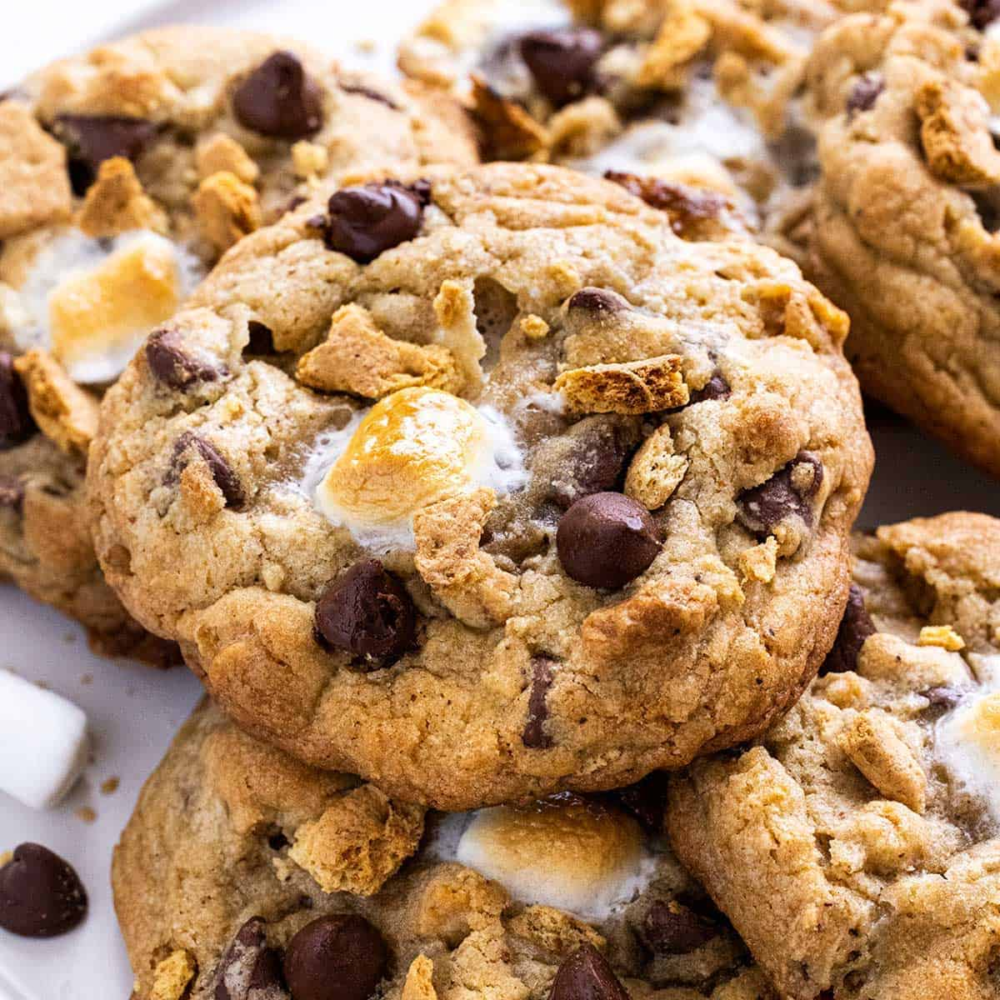
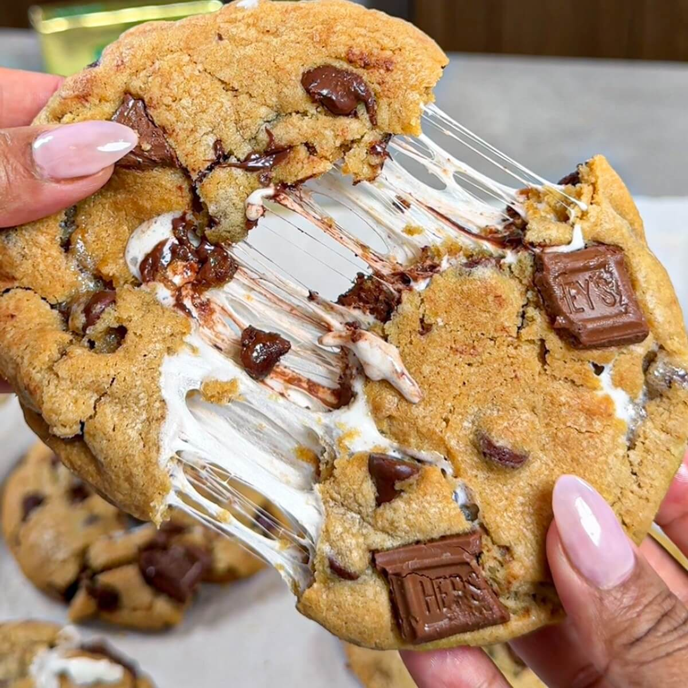

|
 |
A S'more cookie is a baked dessert combined of the flavors of a campfire s'more. This includes graham crackers, chocolate, and marshmallows all combined into a cookie. This cookie is one of comfort and nostalgia providing flavors that give comfort and a new twist on a classic dessert. |

Prep time: 10 Mins
Chill Time: 1 hour
Cooking time: 10 Mins
Recipe by John Kanell